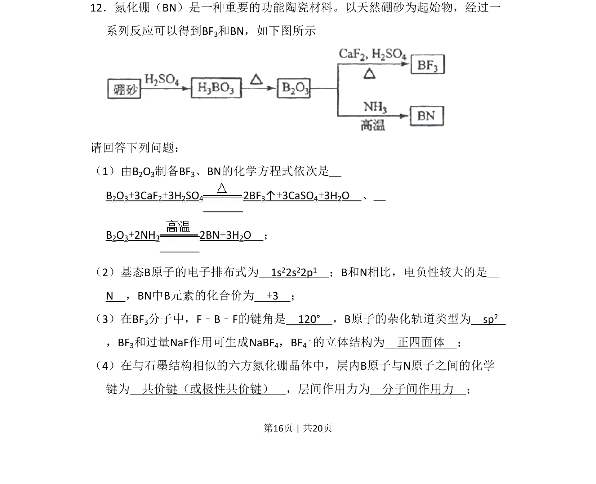
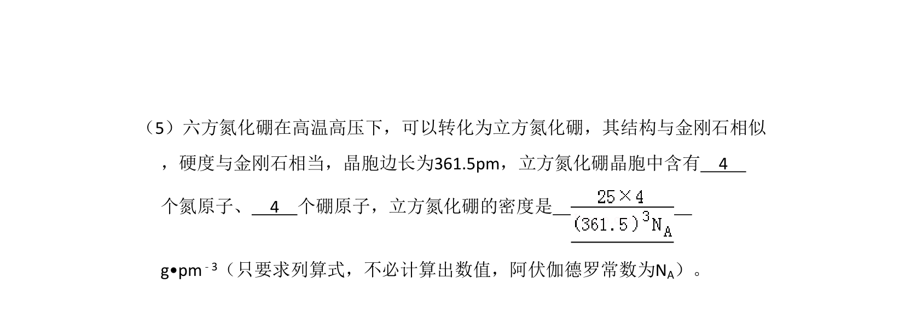
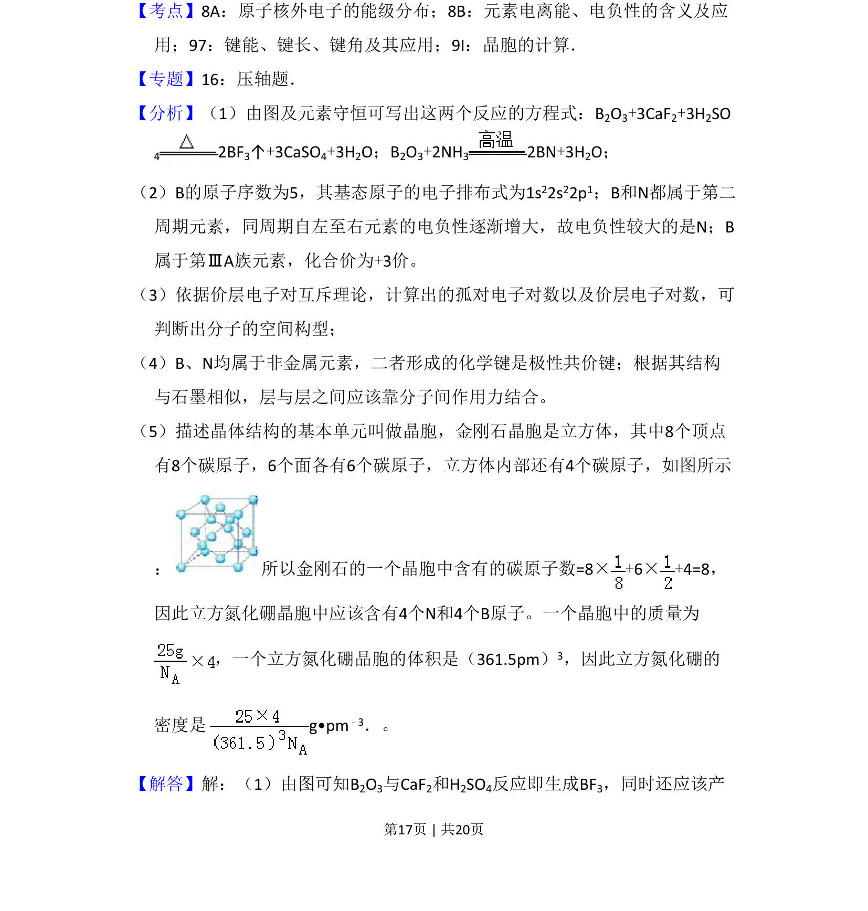
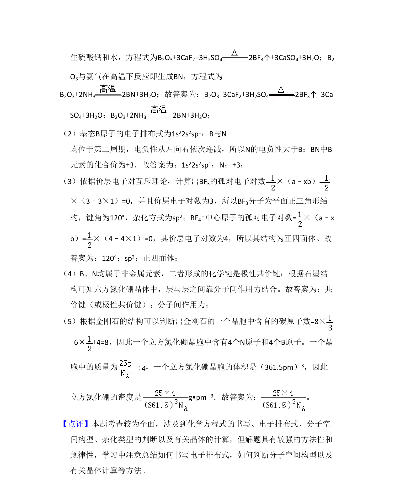

考点：电子排布式 电负性 杂化轨道理论 分子空间构型 化学键类型


以硼砂为原料制备BN和BF₃，考查物质结构与性质，包括电子排布、电负性、杂化轨道、分子空间构型及晶体结构。


📄 原 PDF 第 16 页：
素材/真题/吉林/2008-2024·（吉林）化学高考真题/2011年高考化学试卷（新课标）（解析卷）.pdf
12．氮化硼（BN）是一种重要的功能陶瓷材料。以天然硼砂为起始物，经过一 系列反应可以得到BF3和BN，如下图所示 请回答下列问题： （1）由B2O3制备BF3、BN的化学方程式依次是 B2O3+3CaF2+3H2SO4 2BF3↑+3CaSO4+3H2O 、 B2O3+2NH3 2BN+3H2O ； （2）基态B原子的电子排布式为 1s22s22p1 ；B和N相比，电负性较大的是 N ，BN中B元素的化合价为 +3 ； （3）在BF3分子中，F﹣B﹣F的键角是 120° ，B原子的杂化轨道类型为 sp2 ，BF3和过量NaF作用可生成NaBF4，BF4 ﹣的立体结构为 正四面体 ； （4）在与石墨结构相似的六方氮化硼晶体中，层内B原子与N原子之间的化学 键为 共价键（或极性共价键） ，层间作用力为 分子间作用力 ；